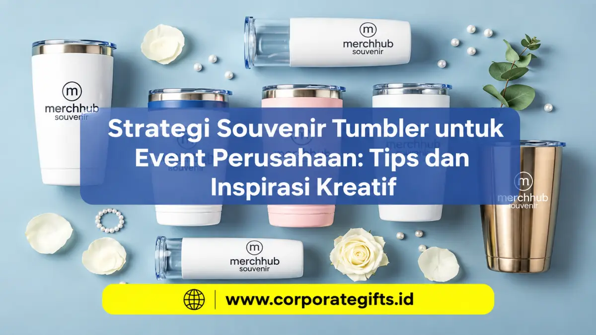

Corporate Gifts ID - Strategi souvenir tumbler event perusahaan yang efektif adalah memilih tumbler stainless steel food grade berkapasitas 350-500 ml, menyesuaikan desain dengan jenis acara, mencetak logo dengan teknik yang tahan lama, dan mengemasnya rapi sesuai anggaran. Dengan cara ini, tumbler bukan sekadar kenang-kenangan, tetapi juga media branding yang dipakai peserta berulang kali.
Event perusahaan, baik perayaan formal berskala nasional maupun gathering kasual keluarga karyawan, merupakan kesempatan emas untuk memperkuat reputasi brand sekaligus memberikan cinderamata yang dihargai oleh penerima. Artikel ini mengupas strategi taktis, tips pemilihan bahan, hingga inovasi kemasan bagi tim Human Resources (HR), General Affairs (GA), divisi procurement, dan event organizer agar pengadaan souvenir kantor benar-benar memberikan imbal hasil branding yang optimal.
Poin Kunci Strategi Souvenir Tumbler Event:
- Fungsionalitas Harian Tinggi: Tumbler dimanfaatkan setiap hari di meja kantor, mobil, maupun gym, memberikan eksposur merek tanpa henti.
- Pilihan Material Tepat: Stainless steel 304 food-grade double-wall menjadi standar emas durabilitas dan retensi suhu minuman.
- Teknik Branding Presisi: Grafir laser memberikan sentuhan elegan permanen, sedangkan UV print unggul untuk logo multi-warna.
- Kapasitas Ergonomis: Rentang 350 hingga 500 ml paling ideal untuk mobilitas karyawan dan pas pada cup holder kendaraan.
- Kemasan Eksklusif (Packaging): Hardbox silinder atau box magnetik dengan pita perusahaan meningkatkan persepsi nilai hadiah secara instan.
Mengapa Souvenir Tumbler Efektif untuk Event Perusahaan?
Dibandingkan cinderamata konvensional seperti gantungan kunci atau pulpen plastik murah, tumbler menduduki peringkat teratas pilihan korporasi karena lima keunggulan strategis berikut:
- Fungsional dan Digunakan Sehari-hari: Tumbler dipakai secara aktif untuk kopi panas di pagi hari maupun air mineral dingin saat bekerja. Logo perusahaan akan terpampang nyata di meja kerja, ruang konferensi, hingga pusat kebugaran.
- Memberikan Kesan Profesional dan Berbobot: Kualitas material logam padat dan lapisan matte finishing mencerminkan kredibilitas institusi yang mengedepankan mutu.
- Area Permukaan Kustomisasi Luas: Format tabung memberikan fleksibilitas penempatan logo korporat, slogan kegiatan, maupun ilustrasi tematik acara 360 derajat.
- Retensi Branding Jangka Panjang: Masa pakai tumbler berkualitas mencapai 3 hingga 5 tahun, memberikan ribuan impresi merek organik tanpa biaya iklan berulang.
- Menyuarakan Nilai Keberlanjutan (Eco-Friendly): Kampanye pengurangan sampah botol plastik sekali pakai secara langsung menaikkan skor ESG (Environmental, Social, and Governance) perusahaan Anda.
Tips Memilih Souvenir Tumbler untuk Acara Perusahaan
Keberhasilan souvenir tumbler sangat ditentukan oleh ketelitian panitia dalam merumuskan lima faktor fundamental:
1. Sesuaikan dengan Nuansa Format Acara
- Seminar Bisnis & Konferensi Formal: Model tumbler termos ramping berbalut warna netral (hitam matte, perak, atau navy) dengan ukiran laser minimalis.
- Family Gathering & Outbound Karyawan: Tumbler sporty bertali atau bermodel handle grip dengan palet warna cerah yang dinamis.
- HUT / Anniversary Perusahaan: Tumbler edisi terbatas (limited edition) beraksen rose gold, kayu bambu, atau grafir nomor seri eksklusif.
2. Pilih Material Berkualitas dan Food Grade
Pastikan material telah teruji bebas zat beracun (BPA-free) dan memenuhi standar keamanan pangan. Pilihlah stainless steel tipe 304 pada dinding bagian dalam agar tidak meninggalkan bau logam atau mengubah rasa minuman.
3. Tentukan Ukuran dan Kapasitas yang Ergonomis
Kapasitas 350 hingga 500 ml adalah standar emas universal. Ukuran ini nyaman digenggam oleh pria maupun wanita, muat dimasukkan ke dalam ransel kerja, dan pas di cup holder mobil.
4. Harmonisasi Warna dengan Panduan Identitas Brand
Pilihlah warna bodi tumbler yang sesuai dengan brand guideline perusahaan atau warna tematik acara untuk memperkuat asosiasi visual.
5. Kalkulasi Anggaran Rasional per Peserta
Hitung total biaya secara menyeluruh mencakup unit tumbler, biaya kustomisasi logo, kotak kemasan, hingga ongkos kirim ke lokasi venue acara.
Perbandingan Material Tumbler untuk Souvenir Perusahaan
Kenali kelebihan masing-masing substrat material sebelum menerbitkan surat pesanan (PO):
| Material Tumbler | Karakteristik & Keunggulan | Rekomendasi Penggunaan Event |
|---|---|---|
| Stainless Steel 304 (Double-Wall Vacuum) | Tahan banting, anti-karat, isolasi suhu minuman panas atau dingin hingga 12 jam | Apresiasi klien VIP, seminar manajerial, suvenir HUT perusahaan |
| Kaca Borosilikat + Silikon Sleeve | Tampilan visual jernih mewah, bebas aroma/rasa residu, tahan kejut suhu | Hadiah dewan direksi, workshop kesehatan, gathering eksekutif indoor |
| Plastik Tritan (BPA-Free) | Sangat ringan, ekonomis, pilihan warna atraktif, tahan benturan keras | Peserta massal (>500 pax), fun run komunitas, outbound team building |

Pilihan material tumbler stainless steel, kaca borosilikat, dan kemasan gift box eksklusif berlogo perusahaan.
Ide Desain Souvenir Tumbler untuk Berbagai Format Event
Hindari menaruh logo korporat secara kaku tanpa sentuhan estetika. Berikut inspirasi konsep desain kreatif yang disukai para audiens:
- Konsep Minimalis Monokrom: Penempatan logo berukuran proporsional di sisi tengah atau vertikal di tepi bawah menggunakan teknik grafir monokrom yang elegan.
- Branding Grafis Pola Geometris: Memadukan logo dengan pola garis abstrak atau pattern khas identitas visual perusahaan di sekeliling tabung.
- Nuansa Ceria & Penuh Warna: Aplikasi ilustrasi maskot atau tipografi bertema kekompakan untuk kegiatan family gathering akhir pekan.
- Edisi Khusus Terbatas (Limited Edition Milestone): Menyertakan penomoran seri atau penulisan tahun pencapaian perusahaan yang membangkitkan rasa bangga kolektif.
- Personalisasi Nama Individu: Mengukir nama masing-masing peserta di bawah logo perusahaan agar cinderamata terasa sangat eksklusif dan mustahil tertukar.
Teknik Kustomisasi Logo dan Kemasan (Packaging) Eksklusif
Kesan pertama penerima terbentuk sejak detik pertama mereka melihat kemasan luar dan menyentuh tekstur cetakan:
Metode Cetak Logo: Grafir Laser vs UV Flatbed Printing
Untuk tumbler berbahan dasar logam stainless steel, metode grafir laser merupakan pilihan terbaik karena hasilnya menyatu dengan bahan, terlihat prestisius, dan permanen seumur hidup tanpa risiko luntur. Sementara itu, teknik UV printing menjadi solusi sempurna jika logo Anda memiliki banyak gradasi warna, kode pantone spesifik, atau ilustrasi penuh warna.
Pilihan Packaging untuk Menambah Nilai Hadiah
Tingkatkan gengsi cinderamata dengan boks kemasan berkualitas:
- Hardbox Magnetik Eksklusif: Boks kaku tebal dengan busa cetak (sponge die-cut) di dalamnya, cocok untuk tamu VIP.
- Tube Box Silinder Kraft Ramah Lingkungan: Tabung silinder berbahan daur ulang yang memberikan kesan alami dan modern.
- Bundling Paket Gift Set: Mengombinasikan tumbler dengan agenda kerja kulit dan pulpen metal di dalam satu kotak serasi.
Alur dan Langkah Pemesanan Souvenir Tumbler Korporat
Ikuti alur standar pengadaan B2B berikut agar proses produksi berjalan tepat waktu tanpa hambatan teknis:
- Tentukan Volume dan Target Penerima: Pastikan kuantitas pesanan mencakup jumlah peserta ditambah cadangan 5-10% untuk kebutuhan darurat.
- Tetapkan Plafon Anggaran Unit: Alokasikan pagu anggaran yang sudah termasuk tumbler, branding, dan kemasan boks.
- Pilih Model Produk dan Substrat Bahan: Konsultasikan stok fisik dan opsi warna yang tersedia di vendor.
- Kirimkan File Vektor Logo: Kirimkan file logo dalam format resolusi tinggi (AI, EPS, atau PDF kurva) untuk proses layout digital.
- Verifikasi Mockup Digital: Teliti posisi proporsi logo, ejaan slogan, dan akurasi warna sebelum menyetujui approval produksi.
- Jadwalkan Produksi dan Pengiriman Lebih Awal: Hindari pemesanan mepet; berikan waktu minimal 10-14 hari kerja agar quality control berjalan maksimal.
Pertanyaan Seputar Souvenir Tumbler Event Perusahaan (FAQ)
Kesimpulan: Maksimalkan Dampak Branding Event dengan Tumbler Berkualitas
Souvenir tumbler tetap menjadi opsi paling efektif dalam menjembatani kebutuhan fungsional peserta event dengan objektif branding korporat jangka panjang. Kunci keberhasilan terletak pada pemilihan bahan yang tepat, ukuran yang ergonomis, ketajaman cetak logo, serta kemasan yang rapi.
Untuk memastikan acara korporat Anda berjalan sukses dengan cinderamata bermutu tinggi tanpa rasa cemas, percayakan kebutuhan pengadaan souvenir tumbler event perusahaan Anda kepada Corporate Gifts ID. Kami siap membantu dari pembuatan mockup gratis, penawaran harga resmi B2B, hingga pengiriman tepat waktu ke seluruh Indonesia.